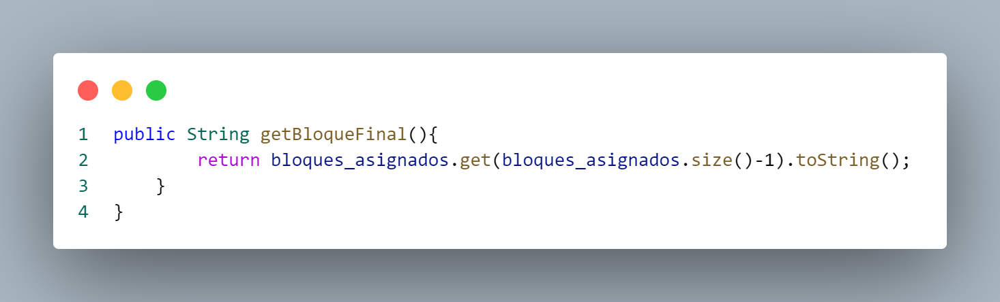

|
Funcionamiento de código
Implementación.java
Archivo.java
Librerias

El código establece un paquete llamado Implementacion y realiza una importación específica
de la clase ArrayList del paquete java.util
Clase Archivo
La clase Java llamada Archivo define
atributos para representar la información
básica de un archivo en un sistema de
archivos.Esta diseñada para representar
información básica sobre archivos en un
sistema de archivos. Los campos proporcionan
detalles sobre el nombre, la posición
de inicio, el tamaño y los bloques asignados
de un archivo.
Metodo Archivo

En este metodo, los constructores en la
clase `Archivo` facilitan la creación de
instancias de archivos de dos maneras.
El primer constructor, sin argumentos,
inicializa la lista de bloques asignados
como una nueva instancia de `ArrayList`.
El segundo constructor, que toma un nombre,
una posición de inicio y un tamaño como
argumentos, utiliza métodos de la clase
(como `setNombre`, `setInicio`, y `setTamanio`,
que no están proporcionados en el código
compartido) para establecer estos valores
en la instancia de archivo creada, ofreciendo
flexibilidad en la inicialización de objetos
`Archivo`.
Metodo get y set Nombre
Estos métodos siguen el patrón
getter-setter para manipular el atributo
privado `nombre`. El método `getNombre()`
devuelve el valor actual de `nombre`,
permitiendo acceder a esa información
desde fuera de la clase. Por otro lado,
el método `setNombre(String nombre)`
permite cambiar el valor de `nombre` al
proporcionar un nuevo valor como parámetro,
facilitando la modificación controlada
de este atributo desde otras partes del
programa. Este enfoque respeta el principio
de encapsulamiento en la programación
orientada a objetos, al restringir el
acceso directo a los atributos y proporcionar
métodos específicos para interactuar con ellos.
Metodo get y set Inicio
Estos métodos siguen el patrón
getter-setter para manipular el atributo
privado `inicio`. El método `getInicio()`
devuelve el valor actual de la posición
de inicio, permitiendo acceder a esa
información externamente. Por otro lado,
el método `setInicio(int inicio)` permite
cambiar el valor de la posición de inicio
al proporcionar un nuevo valor como
parámetro, facilitando así la modificación
controlada de este atributo desde otras
partes del programa.
Metodo get y set Tamaño
Estos métodos
siguen el patrón getter-setter para
manipular el atributo privado `tamanio`.
El método `getTamanio()` devuelve el
valor actual del tamaño del archivo,
permitiendo acceder a esa información
desde fuera de la clase. Por otro lado,
el método `setTamanio(int tamanio)`
permite cambiar el valor del tamaño
al proporcionar un nuevo valor como
parámetro, facilitando así la modificación
controlada de este atributo desde
otras partes del programa.
Metodo setBloques
El método `setBloques_asignados` permite
agregar un número entero `n` a la lista
de bloques asignados (`bloques_asignados`).
Este método es un setter personalizado
que se encarga de la asignación de bloques
al objeto `Archivo`. Cada vez que se
llama a este método, el número `n` se
agrega a la lista `bloques_asignados`,
lo que indica que el archivo está asociado
a ese bloque específico.
Metodo ArrayList
Este método, llamado `getBloques_asignados`,
es un getter que devuelve la lista de bloques
asignados al objeto. En este caso, el método
proporciona acceso a la lista de bloques
asignados (`bloques_asignados`), permitiendo
que otras partes del programa obtengan y
utilicen la información sobre los bloques
de almacenamiento asociados a un objeto de
esta clase. La lista devuelta es del tipo
`ArrayList`, lo que sugiere que
almacena números enteros que representan
los bloques asignados.
Metodo getBloqueFinal

El método `getBloqueFinal` devuelve
una representación en formato de cadena
(String) del último elemento en la
lista de bloques asignados (`bloques_asignados`).
La expresión `bloques_asignados.size()-1`
se refiere al índice del último elemento
en la lista, y `bloques_asignados.get(...)`
obtiene ese elemento. El método `toString()`
convierte este elemento a una cadena antes
de devolverlo.
Bloque.java
Clase Bloque
La clase llamada `Bloque`, ubicada
en el paquete `Implementacion`,
representa bloques en un sistema
de almacenamiento. Tiene campos que
registran el estado del bloque
(ocupado o libre), su número identificador,
y una referencia a un objeto de la clase
`Archivo`, indicando qué archivo está
asociado a este bloque.
Metodo Bloque
Estos son dos constructores para
la clase `Bloque`. El primero se
utiliza cuando se crea una instancia
sin argumentos, estableciendo el
estado del bloque como libre y
sin asociar ningún archivo. El
segundo constructor se emplea cuando
se proporcionan un estado y un número
como argumentos, utilizando métodos
`setEstado` y `setNumero` para asignar
estos valores. Estos constructores
permiten inicializar instancias de
la clase `Bloque` de manera flexible,
ya sea con valores predeterminados o
con valores específicos proporcionados
durante la creación del objeto.
Metodo is y set Estado
Estos métodos siguen el patrón
getter-setter para el campo `estado`.
El método `isEstado()` es un
getter que devuelve el valor
actual del campo `estado`, que
es un booleano indicando si el
bloque está ocupado (`true`) o
libre (`false`). Por otro lado,
el método `setEstado(boolean estado)`
es un setter que permite cambiar
el valor del campo `estado` al
proporcionar un nuevo valor como
parámetro, facilitando la modificación
controlada de este atributo desde
otras partes del programa.
Metodo get y set Archivo
El método `getArchivo()` funciona como un
getter, devolviendo la referencia al objeto
`Archivo` asociado con el bloque, mientras
que `setArchivo(Archivo archivo)` actúa
como un setter, permitiendo cambiar la
referencia al objeto `Archivo` asociado
al bloque al proporcionar un nuevo objeto
`Archivo` como parámetro.
Metodo get y set Numero
Estos métodos, siguen el patrón
getter-setter para el atributo
`numero`. `getNumero()` actúa como
un getter devolviendo el valor
actual del número identificador
del bloque, mientras que `setNumero(int numero)`
funciona como un setter permitiendo
cambiar este valor al proporcionar
un nuevo número como parámetro.
Directorio.java
Librerias

Esta parte del codigo muestra el
inicio de un archivo de código
fuente Java ubicado en el paquete
`Implementacion`. Además, se
importa la clase `ArrayList` desde
el paquete `java.util`. El paquete
`java.util` es parte de la biblioteca
estándar de Java y proporciona
varias clases y utilidades, incluyendo
la implementación de listas dinámicas
como `ArrayList`. La inclusión de `ArrayList`
en este archivo sugiere que se planea utilizar
listas dinámicas en el código para
almacenar y manipular conjuntos de elementos.
Clase Directorio
Esta clase
tiene un campo privado llamado `archivos`
que es una lista dinámica (implementada
como un `ArrayList`) que almacena
objetos de la clase `Archivo`. El
constructor `Directorio()` se encarga
de inicializar esta lista cuando se
crea una instancia de la clase `Directorio`.
Metodo Array get y set Archivos
Estos métodos
implementan un patrón getter-setter
para el campo `archivos`, que es un
`ArrayList` de objetos de la clase
`Archivo`. `getArchivos()` actúa como
un getter, devolviendo la referencia
actual a la lista de archivos en el
directorio, permitiendo acceder a
dicha lista. Por otro lado,
`setArchivos(ArrayList archivos)`
funciona como un setter, permitiendo
cambiar la referencia a la lista de
archivos al proporcionar una nueva
lista como parámetro, facilitando así
la modificación controlada de la lista
desde otras partes del programa.
Metodo Agregar Achivo
Este método,
se utiliza para agregar un objeto de
la clase `Archivo` a la lista de archivos
(`archivos`) en ese directorio. La
línea de código `archivos.add(a);`
agrega el objeto `a` al final de la
lista de archivos en el directorio.
Metodo infoDirectorio
Este método,
se encarga de imprimir información sobre
los archivos contenidos en el directorio.
La salida impresa incluye detalles como
el nombre del archivo, la posición de inicio,
el tamaño y la posición final (posiblemente
el último bloque asignado) de cada archivo
en el directorio. La estructura del bucle
`for` indica que se está iterando a través
de la lista de archivos (`archivos`) en el
directorio, y para cada archivo, se imprime
una línea de información formateada.
Metodo borrar Archivo
Este método,
se utiliza para eliminar un objeto de
la clase `Archivo` de la lista de
archivos (`archivos`) en ese directorio.
La línea de código `archivos.remove(a);`
elimina el objeto `a` de la lista de
archivos.
Disco.java
Librerias
Esta parte de código pertenece a
un archivo fuente ubicado en el
paquete `Implementacion`. Importa
clases relacionadas con la interfaz
gráfica de usuario mediante
`javax.swing.*`, y clases para la
lectura de entrada de datos desde
la entrada estándar a través de
`java.io.BufferedReader` y
`java.io.InputStreamReader`.
Además, incluye la clase `ArrayList`
del paquete `java.util`, indicando
la posible utilización de listas
dinámicas en el código para almacenar
y manipular conjuntos de datos.
Clase Disco
La clase `Disco` representa un disco
en un sistema de archivos. Tiene
atributos que almacenan el tamaño
total del disco (`tamanio`), el
tamaño de cada bloque (`tamanio_bloque`),
una lista de bloques (`n_bloques`),
que probablemente son parte de la
estructura de almacenamiento del disco,
y una referencia a un objeto de la clase
`Directorio` (`dir`), que podría contener
información sobre los archivos y directorios
presentes en el disco. En conjunto, la clase
`Disco` proporciona una estructura para modelar
y gestionar un disco en un entorno de
sistema de archivos.
Metodo Disco
Los dos constructores permiten la
creación de instancias de un objeto
`Disco`. El primer constructor (`Disco()`)
inicializa la lista de bloques y el
directorio sin especificar tamaños,
mientras que el segundo constructor
(`Disco(int tamanio, int tamanio_bloque)`)
permite la creación de un disco con
tamaños específicos proporcionados como
argumentos. En ambos casos, se establece
una lista de bloques y se crea un nuevo
objeto `Directorio`, proporcionando
estructuras fundamentales para representar
un disco en un sistema de archivos simulado.
Metodo get y set Tamaño
Estos métodos permiten acceder y
modificar el atributo `tamanio`,
que representa el tamaño total del
disco. El método `getTamanio()`
funciona como un getter, devolviendo
el tamaño actual del disco, mientras
que `setTamanio(int tamanio)` actúa
como un setter, permitiendo cambiar
este valor al proporcionar un nuevo
tamaño como parámetro.
Metodo get y set Bloques
Estos métodos proporcionan una
interfaz para acceder y modificar
la lista de bloques (`n_bloques`)
en el disco. El método `getN_bloques()`
actúa como un getter, devolviendo
la referencia actual a la lista de
bloques, permitiendo acceder a dicha
lista. Por otro lado, `setN_bloques(ArrayList n_bloques)`
funciona como un setter, permitiendo
cambiar la referencia a la lista de
bloques al proporcionar una nueva
lista como parámetro, facilitando
así la modificación controlada de
la lista desde otras partes del programa.
Metodo get y set Dir
Estos métodos ofrecen una interfaz
para acceder y modificar la referencia
al objeto `Directorio` asociado al
disco. El método `getDir()` funciona
como un getter, devolviendo la referencia
actual al directorio, mientras que
`setDir(Directorio dir)` actúa como
un setter, permitiendo cambiar esta
referencia al proporcionar un nuevo
objeto `Directorio` como parámetro.
Además, el método `agregarDir(Archivo a)`
utiliza el método `agregarArchivo` del
directorio para agregar un archivo
específico al mismo.
Metodo get y set Tamaño del Bloque
Estos métodos proporcionan una interfaz
para acceder y modificar el atributo
`tamanio_bloque`, que representa el
tamaño de cada bloque en el disco.
El método `getTamanio_bloque()` funciona
como un getter, devolviendo el tamaño
actual de los bloques, mientras que
`setTamanio_bloque(int tamanio_bloque)`
actúa como un setter, permitiendo cambiar
este valor al proporcionar un nuevo
tamaño de bloque como parámetro.
Metodo Inicializar Disco
El método se utiliza para inicializar
la lista de bloques (`n_bloques`) del
disco. Utiliza un bucle `for` para crear
instancias de la clase `Bloque` con un
estado inicial como libre (`false`) y un
número identificador correspondiente al
índice del bucle. Estos bloques se añaden
a la lista de bloques en el disco.
Metodo Asignacion Contigua
Este método, se encarga de asignar
bloques contiguos en el disco para
un archivo específico (`Archivo a`)
a partir de una posición inicial
proporcionada (`init`). El método
utiliza un bucle `for` para iterar
sobre los bloques del disco desde
la posición inicial hasta el final.
En el proceso, verifica si los
bloques consecutivos están libres
(su estado es `false`). Si encuentra
un conjunto de bloques consecutivos
suficientes para almacenar el archivo,
actualiza la información del archivo,
asigna los bloques y establece sus
estados como ocupados. Si no hay
suficiente espacio, se elimina el
archivo del directorio y se muestra
un mensaje de error. Además, se
muestran mensajes de notificación
mediante la interfaz gráfica de usuario
(`JOptionPane`).
Metodo Asignacion Vinculada
Este método, se encarga de asignar
bloques vinculados en el disco para
un archivo específico (`Archivo a`).
Comienza verificando si hay suficiente
espacio en bloques para el archivo
mediante el método `espacioBloques`.
Luego, utiliza un bucle para solicitar
al usuario que ingrese bloques específicos
para el archivo. Cada bloque ingresado
se verifica para asegurarse de que esté
libre antes de asignarlo al archivo.
Si se completa la asignación de bloques,
se actualiza la información del archivo
y se establece su inicio. En caso de
que no haya suficiente espacio, se elimina
el archivo del directorio y se muestra
un mensaje indicando la falta de espacio
en disco. Además, maneja posibles excepciones
durante la entrada de datos.
Metodo espacioBloques
Este método, verifica si hay suficiente
espacio libre en bloques en el disco
para almacenar un archivo de un tamaño
dado (`tamanioArchivo`). Itera a través
de la lista de bloques (`n_bloques`)
en el disco y cuenta la cantidad de
bloques que están actualmente libres
(su estado es `false`). La cantidad
de bloques libres se almacena en la
variable `c`. Luego, imprime la cantidad
de bloques libres en la consola (esto
puede ser útil para propósitos de depuración).
Finalmente, devuelve `true` si la cantidad
de bloques libres (`c`) es mayor o igual
al tamaño del archivo proporcionado,
indicando que hay suficiente espacio
para almacenar el archivo. De lo contrario,
devuelve `false`.
Metodo Asignacion Indexada
Este método, se encarga de asignar
bloques de manera indexada en el
disco para un archivo específico
(`Archivo a`). Comienza verificando
si hay suficiente espacio en bloques
para el archivo mediante el método
`espacioBloques`. Luego, utiliza un
bucle para solicitar al usuario que
ingrese bloques específicos para el
archivo. Cada bloque ingresado se
verifica para asegurarse de que esté
libre antes de asignarlo al archivo.
Si se completa la asignación de bloques,
se actualiza la información del archivo
y se establece su inicio. En caso de
que no haya suficiente espacio, se
elimina el archivo del directorio y
se muestra un mensaje indicando la
falta de espacio en disco. Además,
maneja posibles excepciones durante
la entrada de datos.
Metodo Eliminar Disco
Este método, se encarga de eliminar
un archivo específico (`Archivo a`)
del disco y del directorio asociado.
Itera sobre la lista de bloques
(`n_bloques`) en el disco y busca
aquellos bloques que estén ocupados
y pertenezcan al archivo que se
desea eliminar. Para cada bloque
encontrado, se establece su archivo
asociado como `null` y su estado
como libre (`false`). Luego, utiliza
el método `borrarArchivo` del
directorio (`dir`) para eliminar la
referencia al archivo en el directorio.
Metodo Buscar Archivo
Este método, busca un archivo en
el directorio del disco según su
nombre. Itera sobre la lista de
archivos en el directorio
(`dir.getArchivos()`) y compara
el nombre de cada archivo con el
nombre proporcionado como parámetro.
Si encuentra un archivo con el
nombre correspondiente, devuelve
ese archivo. Si no encuentra ninguna
coincidencia, devuelve `null`.
Metodo Ver Disco
Este método, se encarga de visualizar
el estado actual del disco. Itera
sobre la lista de bloques (`n_bloques`)
en el disco y muestra información
sobre cada bloque. Si un bloque está
libre (`isEstado()` devuelve `false`),
se imprime "[Número del Bloque][Vacio]".
Si el bloque está ocupado, se imprime
"[Número del Bloque][Nombre del Archivo]".
La información se muestra en filas de
cuatro bloques, proporcionando una
visualización del estado del disco.
Cada línea representa el estado de
cuatro bloques en el disco, y la función
`System.out.println()` se utiliza para
cambiar de línea después de imprimir
cada conjunto de cuatro bloques.
Simulador.java
Librerias
Este fragmento de código importa
algunas clases del paquete `java.io`
para manejar entrada de datos desde
la consola. Importa las clases
`BufferedReader`, `IOException`, y
`InputStreamReader`. El `BufferedReader`
se usa para leer texto desde una
secuencia de entrada (como la entrada
estándar), mientras que `IOException`
maneja las excepciones asociadas con
la entrada/salida. El `InputStreamReader`
se usa para leer bytes y convertirlos
a caracteres utilizando una codificación
específica o la predeterminada del
sistema.
Clase Simulador
Este programa implementa un simulador
de sistema de archivos básico.
Inicia solicitando al usuario el
tamaño y tamaño de bloque del disco,
inicializa el disco con estos valores
y simula la creación de un archivo
llamado "carta.pdf" con un tamaño de
6 bloques. Utiliza el método de asignación
vinculada para asignar bloques al archivo,
solicita al usuario que ingrese bloques
específicos. Finalmente, muestra el estado
actual del disco y la información del
directorio, proporcionando una representación
básica de las operaciones de manejo de
archivos en un sistema de archivos simulado.
|